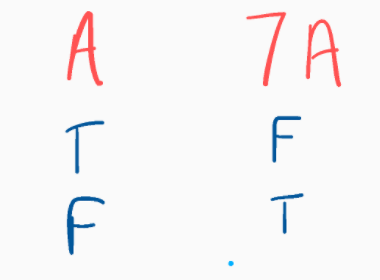
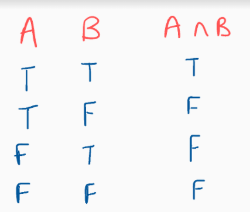
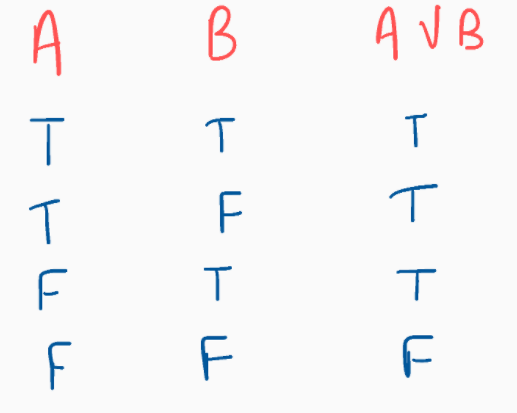
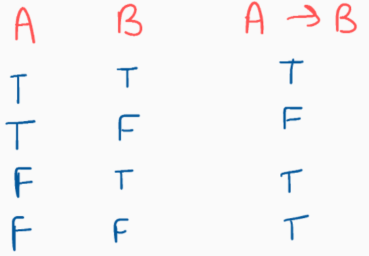

What is logic?
It is something that can take you from assumptions to conclusions. Okay, this is a fairly good definition but what exactly is mathematical logic all about maybe the definition is good by itself but I don't believe in definitions and prefer visualizing when possible so here it is "How mathematical logic can help you discover beautiful insights into nature".
logic is just making sense out of variables so to start with here is a classic example
all men are mortal
Socrates is a man.
Therefore, Socrates is mortal.
here "all men are mortal" can be referred to as A, "Socrates is a man" can be referred to as B and the last sentence can be referred to as C
now we will play with some symbols mainly " ∧, →, ¬, ∨ " (at least for now)
every symbol has its truth table. Now, what exactly is a truth table?
Every variable can be in a state of either True or False and certain combinations of Trues and Falses can give different results depending on the operations(those symbols I talked about earlier)
br>
the negation symbol (¬) also called as not takes in a single variable and makes it the opposite of itself. for example if A = True then ¬A = False.
the truth table for negation is fairly simple

maybe we can now try solving some stuff with just negation
previously we make some variables A, B and C if you don't remember it just go and take a quick look at it
so coming to the questions what is ¬A?
A = "all men are mortal" then the negation of it has to be "all men are not mortal".
Okay, this was fairly simple now what is ¬(¬A) this thing has 2 negation symbols and if ¬A was "all men are not mortal" then the negation of it has to be "all men are mortal" right?
this is more then enough for negation i guess and now we can take a look into other symbols and this is going to be fairly easy so i'll just speed everything up

this is the truth table for and (∧) what is does is very straight forward if A 'and' B is true then C or A∧B = True

this is the truth table for or (∨) so we can devide ∨ into 2 categories "inclusive or" and "exclusive or" also called as OR and XOR respectively, XOR is generally used in computer science but if we ristrict ourselves just to mathematics we'll pretty much everytime use inclusive or
now what exactly is OR?
there should be atleast one TRUE to make the output True and in the case of exclusice or atmost 1 of the variable has to be TRUE

this is the last propositional logic operation we will use this is called "implies" or "if....then" this is a bit confusing and it may take time to clear some stuff about implication
i will try to explain this with little example
explain implies here
Now we will again get into the first statement we talked about earlier
so the statement says A → B = C according the truth table T → T = T so if the statement is right that means that socrates is immortal.
now if we change the statements a little bit by just using aur previously defined symbols ((¬A) → B) = T and (A → (¬B)) = F (if you wanna understand it better just translate the english sentences accourding to the equation)
I don't know if you noticed it or not but whenever I write our logical language I always use brackets usually to contain the logical operations in it and the brackets " ), ( " is a part of our logical language.
so here are some logical equations with appropriate brackets in it and this can easily explain where and when to use brackets!
* ((¬C) ∧ (¬K)
* ((A1 ∧ A10) → ((¬A3) ∨ (A8 ↔ A3)))
* ((A ∨ (B ∧ C)) ↔ ((A ∨ B) ∧ (A ∨ C)))
* (A ∨ (¬A))
* ((¬(¬A)) ↔ A)
* ((A ∧ B) → ((¬C) ∨ D))
* ((→A3
here you can clearly understand how and when to use a bracket and maybe you can try to make there truth tables and you'll find that for some of the equations the truth table always yields TRUE as the output.
this is not some coincidence and are knowns as tautologies.
There is an unusuall equation in the table above. maybe it's the last equation will 2 opening brackets and no closing brackets, this is ofcourse the right way of using the power of logic and is not a WFF.
WFF? What is this thing now something related to WTF ?
WFF stands for Well Formed Formula that means if you have a logical statements which obeys all the rules such as proper use of symbols and brackets hence the last statement is not a WFF.
Now how this is different from comman sense and why am I even reading this?
Ofcourse this is no different then comman sense but it teaches you how to solve a perticular problem and is the problem even solvable or not and in the next section we'll see some intresting stuff !
* if all cows are black and twitty is black, then twitty is a cow.
* the barber in the village shaves every man in the village and does not shaves himself but no man in the village has a beard. Does the barber shaves himself? (no man is allowed to shave himself)
* number that can precisely be discribed by english sentence.
- ten
- ten to the power of ten
- stars in the sky
now let us actually use some logic and take some variables
B = all numbers that can be discribed by an english by atmost 200 chars.
is B a finite set ?
-- yes
now we wanna know what does not comes into B?
the first number that cannot be discribed by an english sentence by atmost 200 chars.
But here we just discribed a number that cannot be discribed by atmost 200 chars in 200 chars !
so just like that here the proof by contradiction ! Now if you don't know what is proof by contradiction we'll see it later in the blog post don't worry.
* now you have a box with 2 statements written on it
1. atleast one of the statement in the box is wrong.
2. I am not going to be a billionaire by the age of 20
and just like that i became worlds youngest billionaire cause if 1 statement is wrong then it's true so 2 statement has to be true !
We talked about sets earlier and not everyone knows about sets so this section is all about explaining sets !
sets starts from here